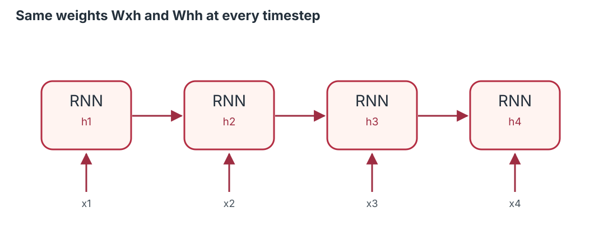
A sequence is more than a set of observations.
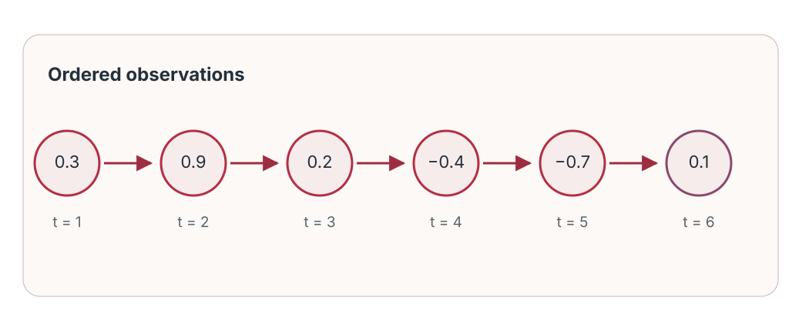
Quick poll (40 seconds): 2, 4, 6, 8, ?
Easy when the rule is local and clear: 10.
But real sequences can contain delayed effects, noise, nonlinearity, and evolving regimes.
A model needs a representation of what has happened so far.
Our teaching sequence: intuition → architecture → mathematics → calculation → code → interpretation.
Pair discussion (2 min): Relate a familiar regression problem to a sequence prediction problem.
A recurrent network uses standard neural-network ideas plus an evolving state.
| Block | Main concepts | Participation |
|---|---|---|
| Foundations | Sequences, representations, tasks | Tensor-shape questions |
| Vanilla RNN | Forward state, shared weights | Hand calculation |
| Training | BPTT, stability, truncation | Gradient reasoning |
| LSTM | Gates, cell state, parameter count | Gate workshop |
| Implementation | R and Python, leakage, baselines | Code walk-through |
| Applications | NLP, anomalies, alternatives | Capstone design |
Optional 10-minute break after the gradient block; notes contain teaching timings.
A sequence is an ordered collection:
\[\mathbf{x}_{1:T}=(\mathbf{x}_1,\mathbf{x}_2,\ldots,\mathbf{x}_T).\]
Forecasting
Predict future demand, load, or temperature.
Language
Classify sentiment or tag words in sentences.
Monitoring
Score multivariate sensor windows for abnormal behavior.
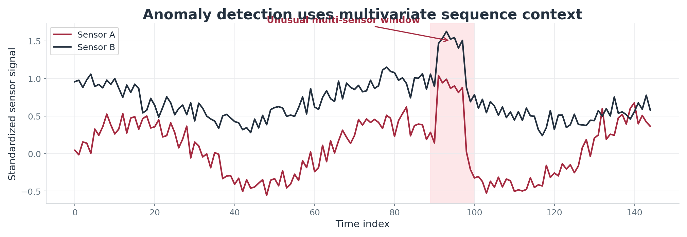
Independent sample setting - Rows can often be permuted without changing the statistical task. - Model: \(\hat y_i=f(\mathbf x_i)\). - No explicit state between rows.
Sequential setting - Order and gaps between measurements matter. - Model: \(\mathbf h_t=F(\mathbf x_t,\mathbf h_{t-1})\). - Historical state influences the output.
Does permuting timestamps leave a one-day-ahead forecasting problem unchanged?
For sequence \(i\), let \(X^{(i)}=(\mathbf x_1,\ldots,\mathbf x_{T_i})\) where \(\mathbf x_t\in\mathbb R^F\).
\[\mathbf h_0=\mathbf 0,\qquad \mathbf h_t=F_\theta(\mathbf x_t,\mathbf h_{t-1}).\]
| Symbol | Meaning |
|---|---|
| \(T_i\) | Timesteps (possibly variable) |
| \(F\) | Input features per timestep |
| \(H\) | Hidden-state dimension |
| \(\theta\) | Shared trainable parameters |
The recurrence is indexed by time, not by independent observations.
Forecasting at time \(t\) \[\hat y_{t+1}=g(\mathbf x_{\le t})\] Future inputs are unavailable at prediction time.
Labeling an already observed sentence A token label may legitimately use left and right context from that sentence.
Choose architecture and evaluation from the information available at deployment.
A feedforward network can learn from a fixed-size lag window—and may work very well.
RNNs provide an explicit sequential inductive bias, not a guarantee of better accuracy.
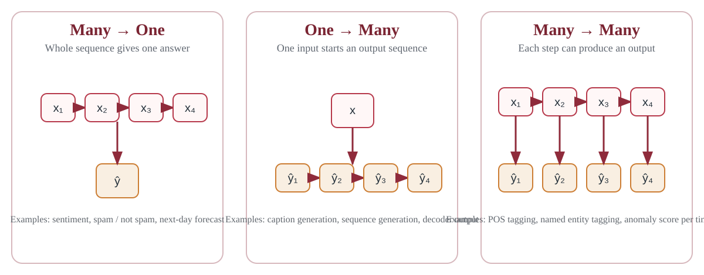
A quick rule:
For batch-first recurrent layers:
\[\boxed{X\in\mathbb{R}^{N\times T\times F}}\]
| Symbol | Meaning | Example |
|---|---|---|
| \(N\) | batch size | 32 |
| \(T\) | timesteps (lookback) | 24 |
| \(F\) | features per step | 1 |
What shape represents 32 windows, each with 24 days and 3 sensors? (32, 24, 3)
Sequences may have lengths \(T_1=3\), \(T_2=5\).
| Sample | Step 1 | Step 2 | Step 3 | Step 4 | Step 5 |
|---|---|---|---|---|---|
| A | a | b | c | PAD | PAD |
| B | p | q | r | s | t |
Why is a padding value of zero not automatically harmless?
Consider 4 sequences, 6 timesteps, and 3 sensor channels. \[X\in\mathbb{R}^{4\times6\times3}\]
For a one-step scalar forecast: \(Y\in\mathbb{R}^{4\times1}\).
For per-timestep 5-class predictions: logits \(\in\mathbb{R}^{4\times6\times5}\).
Practice: With a batch of 32, a 12-day window and 8 variables, what is the input shape? (32, 12, 8).
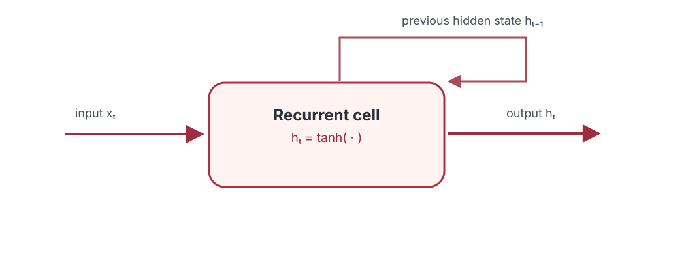
At each step:
\[\boxed{\mathbf{h}_t=f(\mathbf{x}_t,\mathbf{h}_{t-1})}\]
\(\mathbf{h}_t\) is a learned representation of the sequence prefix—not a perfect copy of the past.
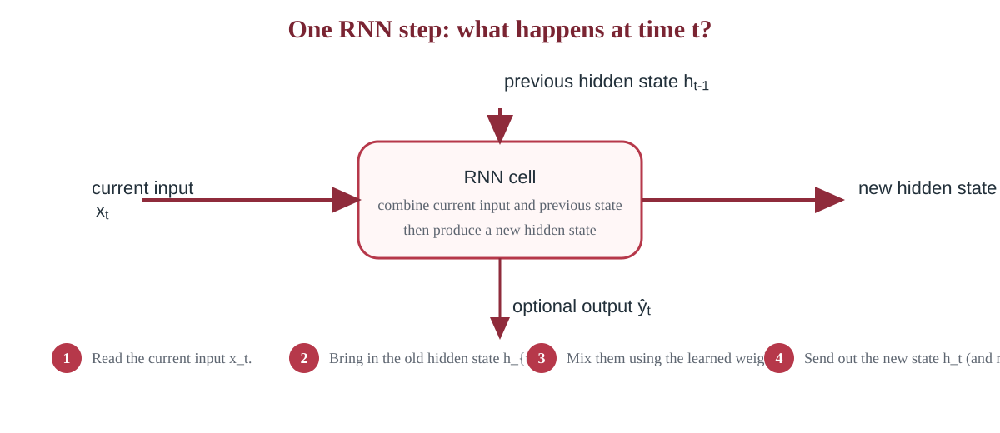
Think of an RNN as a model that says: “I saw something before, I see something now, and I update my memory.”
\[\mathbf{a}_t=W_{xh}\mathbf{x}_t+W_{hh}\mathbf{h}_{t-1}+\mathbf{b}_h\]
\[\mathbf{h}_t=\tanh(\mathbf{a}_t)\]
The equation and the picture describe the same idea: mix old information with new information.
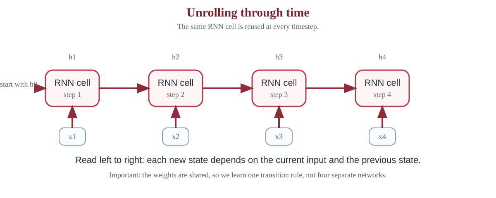
Important idea: the model does not learn a different network at each step. It reuses the same weights again and again.
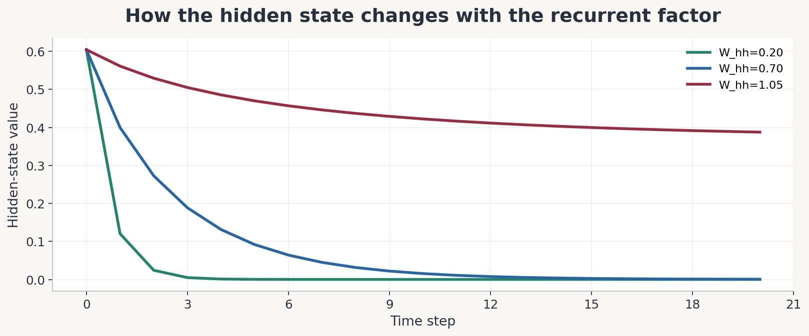
Illustrative scalar recurrence: \(h_t=\tanh(w_hh_{t-1}+0.7x_t)\), with only \(x_1=1\).
For input dimension \(F\), hidden dimension \(H\) and one recurrent layer:
\[W_{xh}\in\mathbb R^{H\times F},\quad W_{hh}\in\mathbb R^{H\times H},\quad b_h\in\mathbb R^H.\]
\[\boxed{P_{\mathrm{RNN}}=HF+H^2+H=H(F+H+1)}\]
Worked count: \(F=8\), \(H=16\) gives \(16(8+16+1)=\boxed{400}\) recurrent parameters.
Parameter count is independent of sequence length \(T\).
Lagged feedforward input \[\hat y_t=f(x_{t-1},x_{t-2},\ldots,x_{t-L})\] - Fixed \(L\) chosen in advance - Often strong and interpretable
Recurrent state \[h_t=F(x_t,h_{t-1})\] - Reuses shared transition - Supports variable sequence length
Can a small lagged MLP outperform an LSTM? Yes; test it.
\[\boxed{\mathbf{h}_t=\tanh(W_{xh}\mathbf{x}_t+W_{hh}\mathbf{h}_{t-1}+\mathbf{b}_h)}\]
Let \(F\) = input features and \(H\) = hidden units.
\[W_{xh}\in\mathbb{R}^{H\times F},\quad W_{hh}\in\mathbb{R}^{H\times H},\quad \mathbf{b}_h\in\mathbb{R}^{H}.\]
For \(F=3\), \(H=8\): input-to-hidden has 24 weights; hidden-to-hidden has 64 weights, excluding biases.
Scalar values: \(h_0=0\), \(W_{xh}=0.5\), \(W_{hh}=0.4\), \(b=0\); \(x_1=1\), \(x_2=0\).
\[h_1=\tanh(0.5\cdot1+0.4\cdot0)=\tanh(0.5)\approx0.4621.\]
\[h_2=\tanh(0.5\cdot0+0.4\cdot0.4621)\approx0.1828.\]
Even with \(x_2=0\), the second state can carry information from \(x_1\).
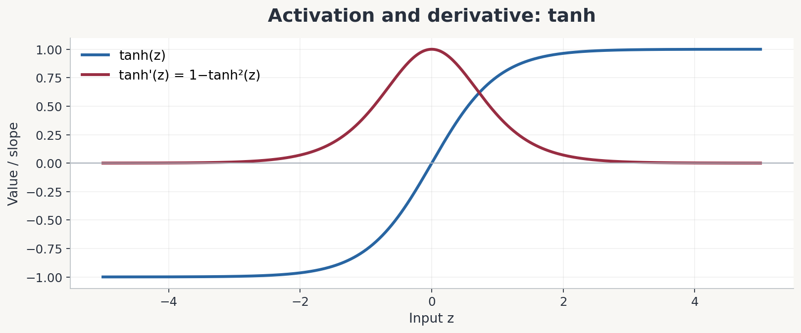
\[\frac{d}{dz}\tanh z=1-\tanh^2 z\in(0,1].\]
For large \(|z|\), tanh is nearly flat: the local derivative becomes small.
Take \(F=2\), \(H=2\), \(x_t=(1,2)^\top\), \(h_{t-1}=(0.1,-0.1)^\top\).
\[W_{xh}=\begin{bmatrix}.2&.1\\-.1&.3\end{bmatrix},\quad W_{hh}=\begin{bmatrix}.5&0\\0&.5\end{bmatrix}.\]
\[z_t=W_{xh}x_t+W_{hh}h_{t-1} =\begin{bmatrix}.45\\ .45\end{bmatrix},\quad h_t=\tanh(z_t).\]
Hence \(h_t\approx (\mathbf{0.422},\mathbf{0.422})^\top\).
A hidden state is usually not the final prediction.
\[\hat{\mathbf{y}}_t=g(W_{hy}\mathbf{h}_t+\mathbf{b}_y)\]
Many-to-one forecasting: pass the last hidden state to a regression head.
Computation grows with sequence length; the core parameter count does not.
Input: “The movie was surprisingly good.”
Would exchanging “good” and “not” potentially change the label? Yes.
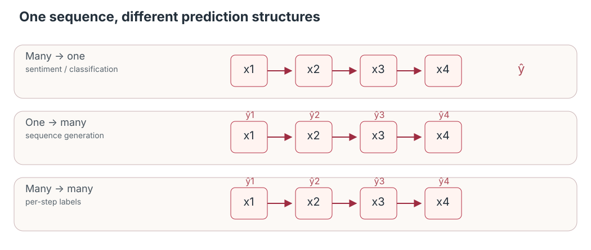
For \(h_{t-1}=0.2\), \(x_t=-1\), \(W_{xh}=0.6\), \(W_{hh}=0.5\), \(b=0.1\):
\[h_t=\tanh(0.6x_t+0.5h_{t-1}+0.1)\]
Compute \(h_t\) and interpret its sign. (90 seconds)
Inside \(\tanh\): \(-0.6+0.1+0.1=-0.4\); therefore \(h_t\approx-0.3799\).
What works
What is difficult
Question for the next section: why can early observations have so little influence on learning?
For a sequence regression problem, a common objective is:
\[\mathcal{L}(\theta)=\frac1N\sum_{i=1}^N\big(\hat y_i-y_i\big)^2.\]
Parameter updates depend on:
\[\theta\leftarrow\theta-\eta\nabla_\theta\mathcal{L}.\]
The gradient must account for how an earlier hidden state influences later predictions.
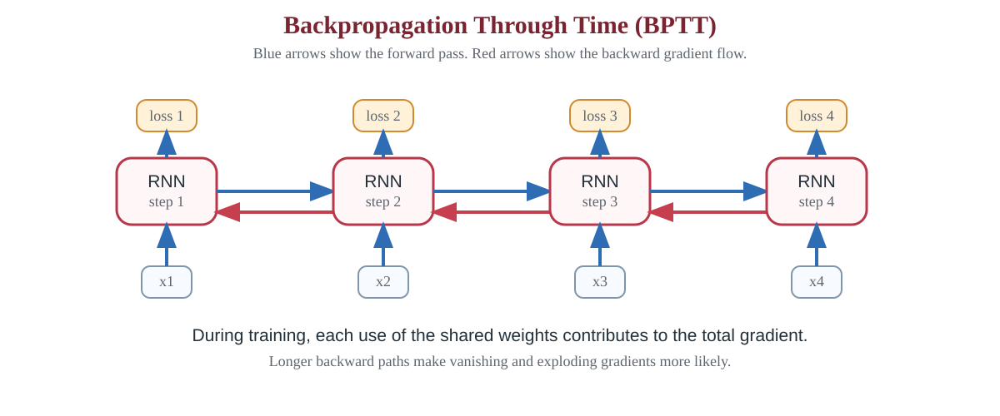
Easy way to remember BPTT:
\[\frac{\partial\mathcal L}{\partial W_{hh}}=\sum_{t=1}^{T}\left.\frac{\partial\mathcal L}{\partial W_{hh}}\right|_{\mathrm{use\ at\ }t}.\]
One network, many uses, one total gradient.
For a scalar \(h_t=\tanh(wh_{t-1}+ux_t)\):
\[\frac{\partial h_t}{\partial h_{t-1}}=w(1-h_t^2).\]
For a loss \(\mathcal L(h_3)\), the contribution to \(h_1\) is:
\[\frac{\partial\mathcal L}{\partial h_1}=\frac{\partial\mathcal L}{\partial h_3}\;\underbrace{w(1-h_3^2)}_{3\to2}\;\underbrace{w(1-h_2^2)}_{2\to1}.\]
The vector case uses Jacobian matrices and matrix multiplication order matters.
For \(k<t\), the chain rule gives:
\[\frac{\partial\mathbf h_t}{\partial\mathbf h_k}=\prod_{j=k+1}^{t}\frac{\partial\mathbf h_j}{\partial\mathbf h_{j-1}}.\]
Repeated Jacobian matrix products can shrink or amplify gradients depending on their singular values, the weights, and activation derivatives.
Long dependency paths can be hard to optimize even when information would be useful.
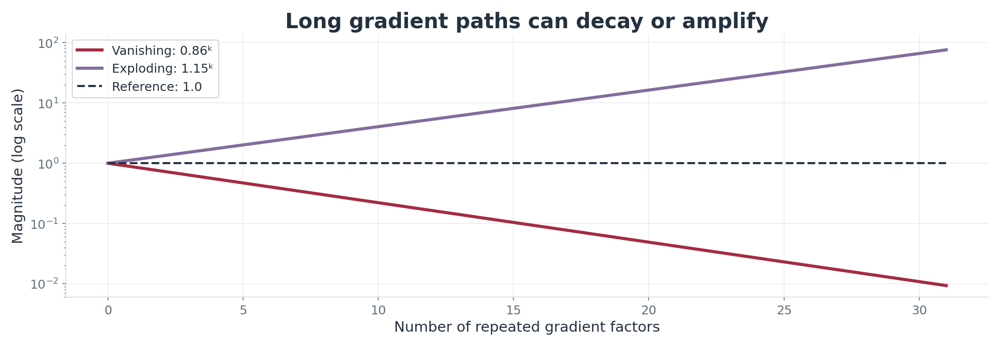
For a scalar repeated factor \(0.65\): \(0.65^{20}\approx0.00018\).
Small updates to parameters handling distant history → slow or ineffective learning.
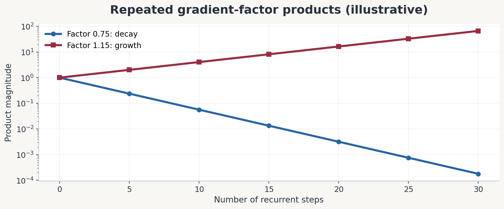
\[0.75^{20}\approx0.00317,\qquad 1.15^{20}\approx16.37.\]
What happens after 40 steps? Explain why repeated multiplications matter.
\[J_t=\frac{\partial h_t}{\partial h_{t-1}}=\operatorname{diag}(1-h_t^2)W_{hh}.\]
State near zero - \(h_t\approx0\) - \(\tanh'\) is near 1 - less attenuation from activation
State near ±1 - \(|h_t|\approx1\) - \(\tanh'\) is near 0 - potentially strong attenuation
Both activation derivatives and recurrent weights shape the Jacobian.
A scalar repeated factor above 1 grows rapidly:
\[1.35^{20}\approx404.\]
Vanishing and exploding gradients are distinct phenomena requiring different mitigation strategies.
| Strategy | Main purpose | Limitation |
|---|---|---|
| Gradient clipping | Bound excessive gradient norm | Does not fix vanishing |
| Truncated BPTT | Reduce backward graph length | Limits learning across longer spans |
| Orthogonal initialization | Improve recurrent dynamics | No universal solution |
| Gated cells (LSTM/GRU) | Learn selective memory updates | More parameters and compute |
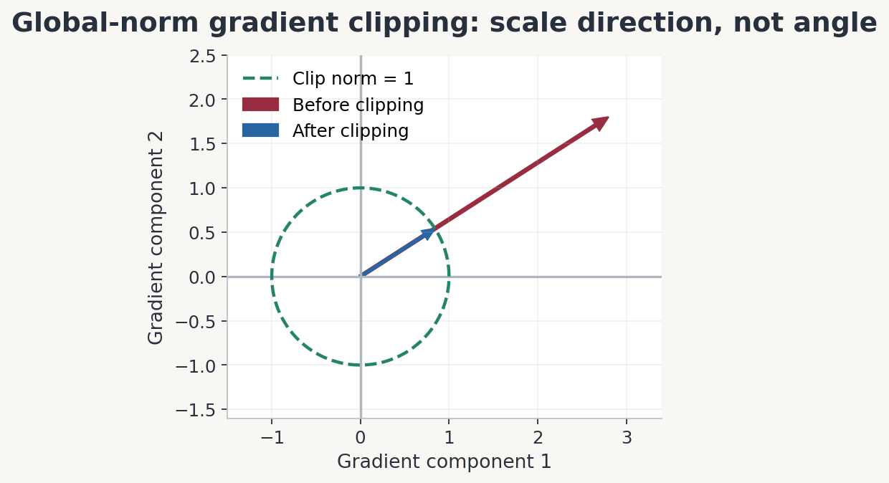
\[g_{\mathrm{clipped}}=g\min\left(1,\frac{\tau}{\lVert g\rVert_2}\right).\]
Clipping limits gradient norm, not the underlying model’s memory problem.
Full BPTT: backpropagate through all \(T\) unrolled steps.
Truncated BPTT: process chunks of length \(K\) and stop gradients across a chosen chunk boundary.
What historical influence is still present in the forward state, and what gradient path is deliberately cut?
For a simplified scalar chain of 15 derivatives:
\(0.7^{15}\approx0.00475\); \(1.3^{15}\approx51.2\).
The actual system multiplies Jacobians, not one scalar factor.
A simple RNN keeps rewriting one hidden state.
That can be enough for short patterns, but for longer patterns we often want a model that can more carefully:
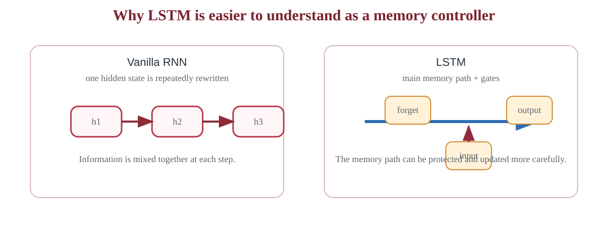
Long Short-Term Memory was introduced to improve learning across long dependencies.
Memory is controlled by learned gates, not simply carried forward unchanged.
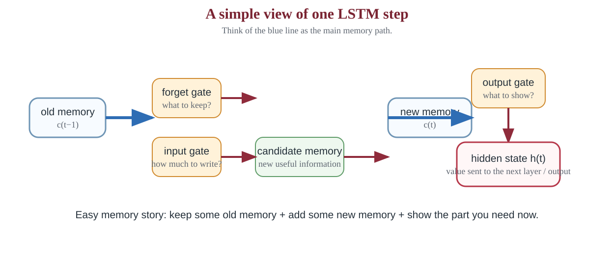
The blue path is the main memory line. The gates decide what to keep, what to write, and what to show.
Cell state \(\mathbf c_t\)
Carries an evolving memory representation, updated additively by forgetting and writing.
Hidden state \(\mathbf h_t\)
Controls what the cell exposes to the next layer or the prediction head.
\[\mathbf c_t=\mathbf f_t\odot\mathbf c_{t-1}+\mathbf i_t\odot\tilde{\mathbf c}_t\]
| Contribution | Date | Core idea |
|---|---|---|
| Hochreiter & Schmidhuber | 1997 | Long Short-Term Memory architecture |
| Gers, Schmidhuber & Cummins | 2000 | Adaptive forget gate |
| Current common implementations | Later | Forget, input, candidate, and output transforms |
The six standard equations shown in this lecture describe a modern forget-gated LSTM.
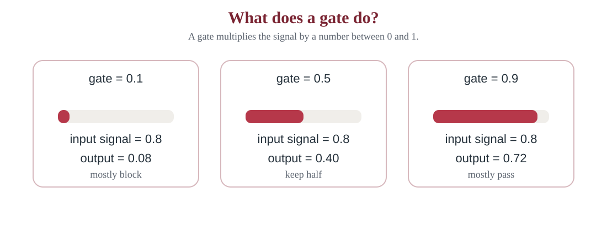
\[\sigma(z)=\frac{1}{1+e^{-z}}\in(0,1)\]
A gate is not an all-or-nothing switch. It usually acts like a dimmer knob: small value = block more, large value = pass more.
\[\boxed{\mathbf f_t=\sigma(W_f[\mathbf h_{t-1},\mathbf x_t]+\mathbf b_f)}\]
The retained previous memory is:
\[\mathbf f_t\odot\mathbf c_{t-1}\]
If \(c_{t-1}=0.8\) and \(f_t=0.25\), retained contribution is 0.20.
The forget gate controls the old component of memory.
\[\boxed{\mathbf i_t=\sigma(W_i[\mathbf h_{t-1},\mathbf x_t]+\mathbf b_i)}\]
If \(i_t=0\), can the candidate change the cell state at this step? No, not through the input term.
\[\boxed{\tilde{\mathbf c}_t=\tanh(W_c[\mathbf h_{t-1},\mathbf x_t]+\mathbf b_c)}\]
Gate × candidate = controlled new information.
| Cell dimension | Forget \(f\) | Input \(i\) | Output \(o\) |
|---|---|---|---|
| 1 | 0.95 | 0.05 | 0.80 |
| 2 | 0.10 | 0.90 | 0.40 |
| 3 | 0.65 | 0.20 | 0.05 |
Which dimension mostly retains old memory? Which mostly writes new content? Which is largely hidden from output?
Values are pedagogical examples, not measured gate activations.
Given \(c_{t-1}=0.7\) and \(\tilde c_t=-0.2\):
| Scenario | \(f_t\) | \(i_t\) | Updated \(c_t\) |
|---|---|---|---|
| Preserve | 1.0 | 0.0 | \(0.70\) |
| Overwrite | 0.0 | 1.0 | \(-0.20\) |
| Blend | 0.8 | 0.5 | \(0.46\) |
\[c_t=f_tc_{t-1}+i_t\tilde c_t.\]
The output gate then determines how much of \(\tanh(c_t)\) is exposed.
\[\boxed{\mathbf c_t=\mathbf f_t\odot\mathbf c_{t-1}+\mathbf i_t\odot\tilde{\mathbf c}_t}\]
Retain: \(f_t\odot c_{t-1}\)
Write: \(i_t\odot\tilde c_t\)
The additive path is a central reason LSTM can propagate some gradients more effectively than a conventional RNN.
\[\boxed{\mathbf o_t=\sigma(W_o[\mathbf h_{t-1},\mathbf x_t]+\mathbf b_o)}\]
The output gate controls the visible hidden state, rather than directly overwriting cell memory.
\[\mathbf h_t=\mathbf o_t\odot\tanh(\mathbf c_t)\]
If \(o_t\approx0\), is the cell state necessarily erased? No.
Example: \(c_t=0.62\) and \(o_t=0.7\).
\[h_t=0.7\,\tanh(0.62)\approx0.3858.\]
The same cell state can produce different hidden states depending on the output gate.
Many-to-one forecasting: a dense layer maps the final \(h_T\) to \(\hat y\).
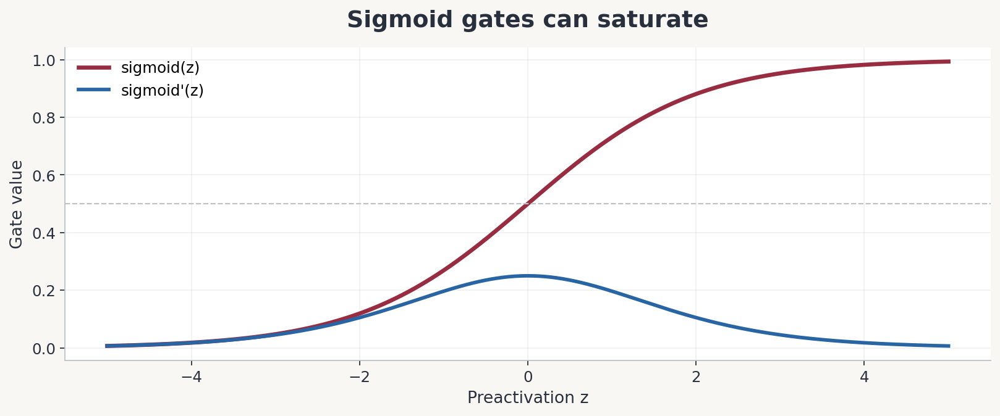
\[\sigma(z)=\frac1{1+e^{-z}},\qquad\sigma'(z)=\sigma(z)(1-\sigma(z)).\]
Gates help control information flow, but saturated gates can also have small gradients.
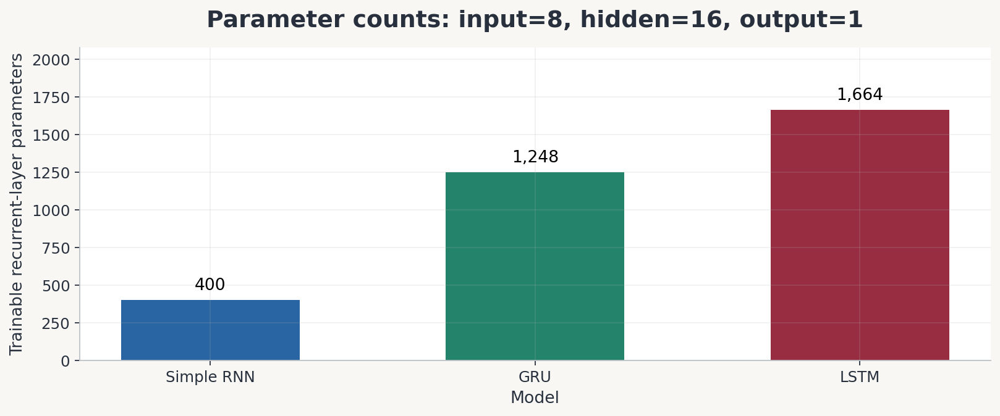
\[P_{\mathrm{LSTM}}=4H(F+H+2)\] for the common PyTorch gate implementation with two bias vectors.
With \(F=8,H=16\): Simple RNN = 400, GRU = 1,248, LSTM = 1,664 recurrent-layer parameters. Counts depend on library bias conventions.
\[\begin{aligned} \mathbf f_t&=\sigma(W_f[\mathbf h_{t-1},\mathbf x_t]+\mathbf b_f)\\ \mathbf i_t&=\sigma(W_i[\mathbf h_{t-1},\mathbf x_t]+\mathbf b_i)\\ \tilde{\mathbf c}_t&=\tanh(W_c[\mathbf h_{t-1},\mathbf x_t]+\mathbf b_c)\\ \mathbf c_t&=\mathbf f_t\odot\mathbf c_{t-1}+\mathbf i_t\odot\tilde{\mathbf c}_t\\ \mathbf o_t&=\sigma(W_o[\mathbf h_{t-1},\mathbf x_t]+\mathbf b_o)\\ \mathbf h_t&=\mathbf o_t\odot\tanh(\mathbf c_t) \end{aligned}\]
Forget → propose/write → update cell → expose hidden.
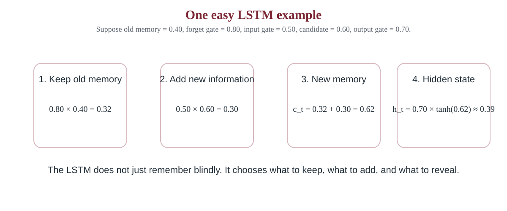
In a real model, these gate values are learned automatically from the current input and the previous hidden state.
Holding the gate values fixed locally, the cell-state update includes:
\[\frac{\partial\mathbf c_t}{\partial\mathbf c_{t-1}}\approx\mathrm{diag}(\mathbf f_t).\]
Improved gradient pathways—not a mathematical guarantee against vanishing gradients.
From \(c_t=f_t\odot c_{t-1}+i_t\odot\tilde c_t\):
\[\left.\frac{\partial c_t}{\partial c_{t-1}}\right|_{\mathrm{gates\ fixed}}=\operatorname{diag}(f_t).\]
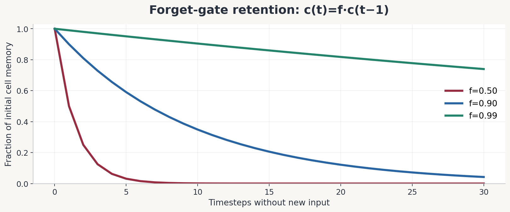
The complete derivative also contains indirect dependencies through the gates; the plot isolates the direct retention route.
An LSTM is an architectural tool, not a guarantee of long-range understanding.
Assume \(c_{t-1}=0.7\) and candidate \(\tilde c_t=-0.4\).
Case A: \(f_t=1, i_t=0\) → new \(c_t\)?
Case B: \(f_t=0, i_t=1\) → new \(c_t\)?
Case C: \(f_t=0.5, i_t=0.5\) → new \(c_t\)?
Solutions: A = 0.7, B = −0.4, C = 0.15.
If \(o_t=0\), then \(h_t=0\) regardless of these cell values.
Work in pairs (3 minutes). Given \(c_{t-1}=-0.3\), \(f=0.6\), \(i=0.4\), \(\tilde c=0.5\), and \(o=0.8\), compute \(c_t\) and \(h_t\).
\[c_t=0.6(-0.3)+0.4(0.5)=-0.18+0.20=\boxed{0.02}.\]
\[h_t=0.8\tanh(0.02)\approx\boxed{0.016}.\]
Goal: predict \(y_t\) from the previous 24 values.
\[\underbrace{(y_{t-24},\ldots,y_{t-1})}_{\text{model input}}\longrightarrow\hat y_t\]
We use a synthetic, reproducible 500-observation series with trend, periodic structure, and noise.
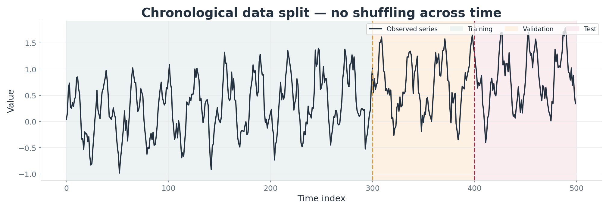
At each prediction time, inputs come only from earlier observations.
| Question | Safe practice |
|---|---|
| When was a value available? | Define the forecast origin |
| When was preprocessing fitted? | Training period only |
| Were windows randomly split? | Prefer target-time ordering |
| Were hyperparameters tuned on test? | Keep test untouched |
| Were lagged targets aligned correctly? | Check indices explicitly |
Forecast accuracy is meaningless if the evaluation uses unavailable future information.
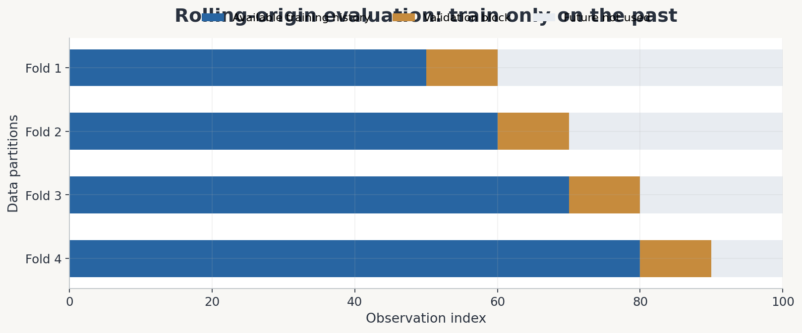
Illustrative evaluation folds. No test performance is inferred from the diagram.
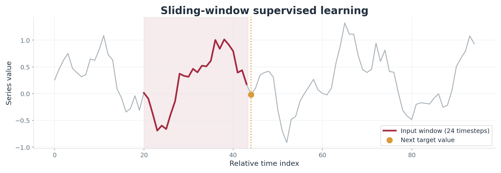
\[X_i=[z_i,\ldots,z_{i+23}]\in\mathbb{R}^{24\times1},\quad y_i=z_{i+24}.\]
The complete batch tensor has shape (number of windows, 24, 1).
For one-step forecasting, the persistence baseline is:
\[\hat y_t^{\mathrm{naive}}=y_{t-1}.\]
The test-set root mean squared error is:
\[\mathrm{RMSE}=\sqrt{\frac1{n_{test}}\sum_{t\in\mathrm{test}}(\hat y_t-y_t)^2}.\]
A complex model should be compared against a relevant simple forecast.
\[\mathrm{Skill}=1-\frac{\mathrm{RMSE}_{\mathrm{model}}}{\mathrm{RMSE}_{\mathrm{baseline}}}\]
Positive skill indicates improvement relative to the chosen baseline (a defined ratio, not a universal metric).
| Layer | Expected tensor shape |
|---|---|
| Input | \((N,24,1)\) |
| LSTM (last state) | \((N,16)\) |
| Dense | \((N,1)\) |
Run R/train_models.R for the complete training implementation and backend setup.
history <- model |> fit(
x = X[train, , , drop = FALSE],
y = Y[train, , drop = FALSE],
validation_data = list(
X[valid, , , drop = FALSE],
Y[valid, , drop = FALSE]),
epochs = 35, batch_size = 32,
callbacks = list(callback_early_stopping(
monitor = "val_loss", patience = 7,
restore_best_weights = TRUE)))Only the training partition drives gradient updates; validation guides early stopping.
Inverse-transform predictions before reporting RMSE in original units.
R outputs are generated when the R script runs; the deck does not invent R metric values.
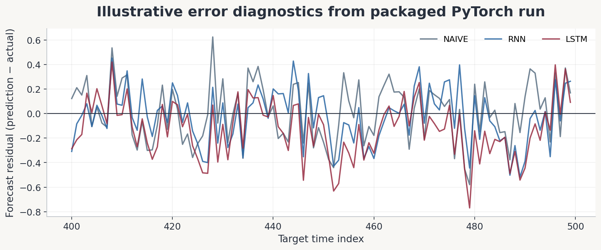
Residuals derive from the packaged Python demonstration; results are dataset-specific.
Full source: python/train_models.py.
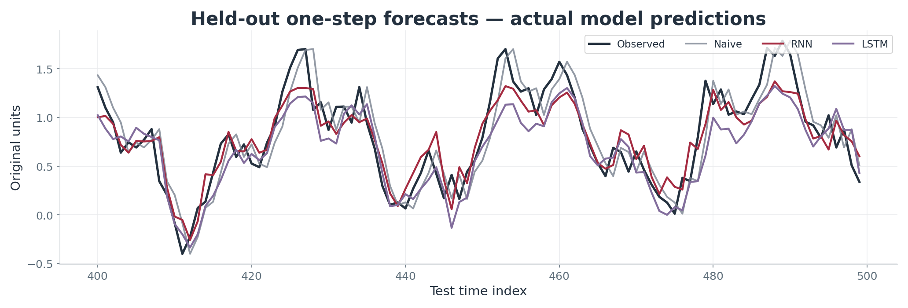
The plotted predictions were produced by running the provided script on the synthetic dataset (seed 42); one-step-ahead evaluation.
| Model | Test RMSE (original units) |
|---|---|
| Naive (last observation) | 0.2425 |
| PyTorch RNN | 0.2244 |
| PyTorch LSTM | 0.2635 |
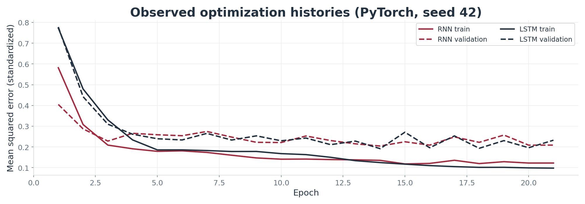
In this single reproducible run, RNN had the lowest test RMSE. LSTM is not automatically better.
One train/test split and one random seed do not establish a universal ranking.
Suggested report for each model:
| Statistic | Why report it? |
|---|---|
| Mean test RMSE over seeds | Typical performance |
| Standard deviation / interval | Training variability |
| Training time and parameter count | Resource tradeoffs |
| Rolling-origin results | Temporal robustness |
If an LSTM wins once but loses on four other seeds, what can we responsibly conclude?
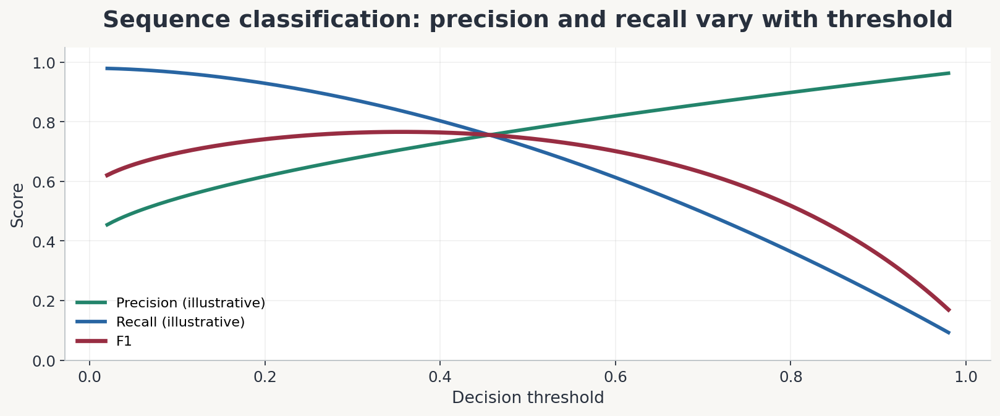
\[\mathrm{Precision}=\frac{TP}{TP+FP},\quad \mathrm{Recall}=\frac{TP}{TP+FN}.\]
Illustrative curves; real shape depends on classifier and dataset. For rare events, examine PR curves, not only accuracy.
Input: a token/embedding sequence \(E\in\mathbb R^{T\times d}\).
Embeddings → recurrent encoder → final hidden state → dense classifier.
A recurrent encoder is one design choice; modern attention-based encoders are also common.
A multivariate sequence window has shape \(T\times F\) with \(F>1\).
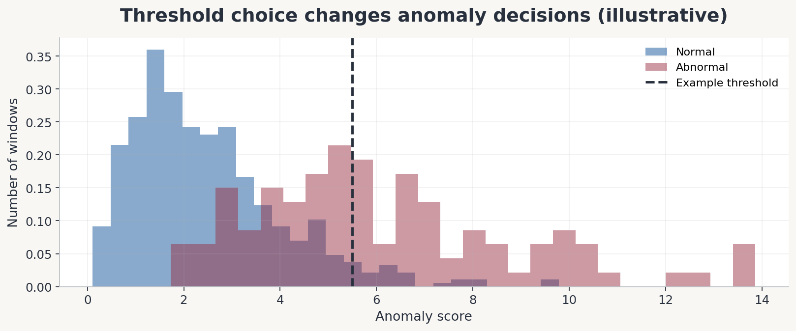
Illustrative synthetic score distributions, not observed operational results.
| Model | Main characteristic | Typical tradeoff |
|---|---|---|
| Vanilla RNN | Simple recurrent state | Struggles with some long dependencies |
| LSTM | Cell state + multiple gates | Heavier recurrent computation |
| GRU | Gated, fewer gate families | Often simpler than LSTM |
| Transformer | Attention across positions | Different context/memory costs |
There is no universal winner. Prefer evidence from a leak-free task-specific experiment.
A common GRU formulation uses update gate \(z_t\) and reset gate \(r_t\):
\[z_t=\sigma(W_zx_t+U_zh_{t-1}+b_z),\quad r_t=\sigma(W_rx_t+U_rh_{t-1}+b_r).\]
\[\tilde h_t=\tanh(W_hx_t+U_h(r_t\odot h_{t-1})+b_h).\]
\[h_t=(1-z_t)\odot\tilde h_t+z_t\odot h_{t-1}.\]
Gate naming and update orientation vary across presentations; these equations define our convention.
A defensible model-selection checklist
Choose a model by task-specific evidence, not architecture popularity.
Group design (5 minutes): Predict tomorrow’s electricity demand from the previous 24 hourly observations plus temperature.
Write a one-page protocol with: 1. Input/target tensor shapes and forecast horizon. 2. Chronological split and train-only preprocessing. 3. Naive and seasonal baselines. 4. RNN and LSTM candidates with a matching tuning budget. 5. Metrics, uncertainty, and leakage checks.
Exit question: Why is an additive cell-state path useful?
Practice: Run both scripts; repeat across multiple seeds; compare with the naive baseline.
Resources: references.bib · R/ · python/ · instructor_guide.md.
Muhammad Zikriya | Deep Learning for Sequential Data